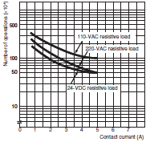
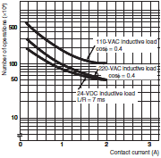
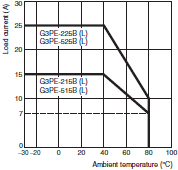
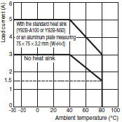
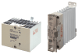
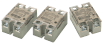
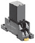
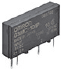

Solid-state Relays
No-contact relays that semiconductor is utilized, which enables high-speed and high-frequency operation. OMRON provides Solid-state Relay for enormous range of applications.
| Introduction | Features |
| Principles |
|
| Engineering Data |
|
|
|
|
-
 What Is a Solid State Relay?
What Is a Solid State Relay?
-
Structure and Operating Principle
-
Features
-
Types of SSRs
-
Control Methods
What Is a Solid State Relay?
A Solid State Relay (SSR) is a relay that does not have a moving contact. In terms of operation, SSRs are not very different from mechanical relays that have moving contacts. SSRs, however, employ semiconductor switching elements, such as thyristors, triacs, diodes, and transistors.
Structure and Operating Principle
SSRs use electronic circuits to transfer a signal.
1.The input device (switch) is turned ON.
2.Current flows to the input circuits, the photocoupler operates, and an electric signal is transferred to the trigger circuit in the output circuits.
3.The switching element in the output circuit turns ON.
4.When the switching element turns ON, load current flows and the lamp turns ON.
5.The input device (switch) is turned OFF.
6.When the photocoupler turns OFF, the trigger circuit in the output circuits turns OFF, which turns OFF the switching element.
7.When the switching element turns OFF, the lamp turns OFF.
Features
SSRs are relays that use semiconductor switching elements. They use optical semiconductors called photocouplers to isolate input and output signals.
The photocouplers change electric signals into optical signals and relay the signals through space, thus fully isolating the input and output sections while relaying the signals at high speed.
Also, SSRs consist of electronic components with no mechanical contacts. Therefore, SSRs have a variety of features that mechanical relays do not incorporate.
The greatest feature of SSRs is that SSRs do not use switching contacts that will physically wear out.
Mechanical Relays (General-purpose Relays)
Example of an Electromagnetic Relay (EMR)
An EMR generates electromagnetic force when the input voltage is applied to the coil. The electromagnetic force moves the armature. The armature switches the contacts in synchronization.
Solid State Relays (SSRs)
Representative Example of Switching for AC Loads
| General-purpose Relay | Solid State Relay (SSR) | |
| Features | Compact More compact than an SSR when the same load capacity is controlled. Enable downsizing of multi-pole relays. Etc. | Enable high-speed and high-frequency switching. Unlimited number of switching operations. Consist of semiconductors, so there is no contact erosion caused by switching. Zero cross function. No operation noise. Etc. |
| Precautions | Limited number of switching operations. This is because mechanical switching results in contact erosion. Etc. | Heat dissipation measures are necessary. This is due to the greater self heat generation that results from semiconductor loss compared with electromagnetic relays (General-purpose Relays). Etc. |
| Selection points | Electrical Durability Curves Example: MY2 (Reference Information) Resistive Load  Inductive load  | Derating Curves Example: G3PE (Reference Information)  Example: G3NA (Reference Information)  |
Types of SSRs
OMRON classifies the SSRs according to type, as shown in the following table.
| Type | Load current | Points | Typical Relays | |
| SSRs integrated with heat sinks | 150 A or lower | The integrated heat sink enables a slim design. These relays are mainly installed in control panels. | G3PJ, G3PA, G3PE, G3PH etc. |  |
| SSRs with separate heat sinks | 90 A or lower | Separate installation of heat sinks allows the customers to select heat sinks to match the housings of the devices they use. These relays are mainly built into the devices. | G3NA, G3NE, etc. |  |
| Relays with the same shapes | 5 A (10 A) or lower | These relays have the same shape as plug-in relays and the same sockets can be used. They are usually built into control panels and used for I/O applications for programmable controllers and other devices. | G3F(D), G3H(D), G3R-I/O, G3RZ, G3TA etc. |  |
| PCB-mounted SSRs | 5 A or lower | SSRs with terminal structure for mounting to PCBs. The product lineup also includes MOS FET relays, which are mainly used for signal switching and connections. | G3MC, G3M, G3S, G3DZ, etc. |  |
*MOS FET relays have control circuits that are different from those of traditional SSRs.
Refer to MOS FET Relays of Further Information for the MOS FET relay structure, glossary, and other information.
Control Methods
ON/OFF Control
ON/OFF control is a form of control in which a heater is turned ON and OFF by turning an SSR ON and OFF in response to voltage output signals from a temperature controller. The same kind of control is also possible with an electromagnetic relay, but an SSR must be used to control the heater if it is turned ON and OFF at intervals of a few seconds over a period of several years.
Low-cost, noiseless operation without maintenance is possible.
Phase Control (Single Phase)
With phase control, the output is changed every half-cycle in response to the current output signals in the range 4 to 20 mA from a temperature controller. Using this form of control, high-precision temperature control is possible, and is used widely with semiconductor equipment.
Precise temperature control is possible.
The heater’s service life is increased.
Optimum Cycle Control
The basic principle used for optimum cycle control is zero cross control, which determines the ON/OFF status each half cycle. A waveform that accurately matches the average output time is output.
The accuracy of the zero cross function is the same as for conventionally zero cross control. With conventional zero cross control, however, the output remains ON continuously for a specific period of time, whereas with optimum cycle control, the ON/OFF status is determined each cycle to improve output accuracy.
Many heaters can be control using communications.
Noise-less operation with high-speed response is possible.
Cycle Control
With cycle control (with the G32A-EA), output voltage is turned ON/OFF at a fixed interval of 0.2s. Control is performed in response to current output from a temperature controller in the range 4 to 20 mA.
Noiseless operation with high-speed response is possible.
Precautions for Cycle Control
With cycle control, an inrush current flows five times every second (because the control cycle is 0.2 s).
With a transformer load, the following problems may occur due to the large inrush current (approximately 10 times the rated current), and controlling the power at the transformer primary side may not be possible.
(1)The SSR may be destroyed if there is not sufficient leeway in the SSR rating.
(2)The breaker on the load circuit may be tripped.